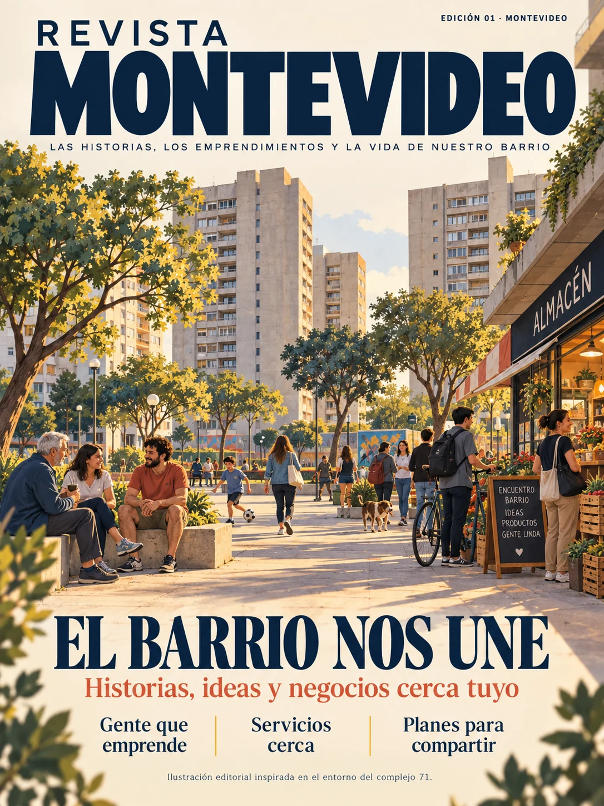

EDICIÓN 01 · TAPA
El barrio nos une.
Una revista para descubrir historias, ideas, servicios y emprendimientos cerca tuyo. La primera tapa toma como inspiración la vida cotidiana de Malvín Alto y el entorno del complejo 71.
La imagen es una ilustración editorial. No representa una fotografía exacta del complejo ni de personas reales.
Descargar la tapa →